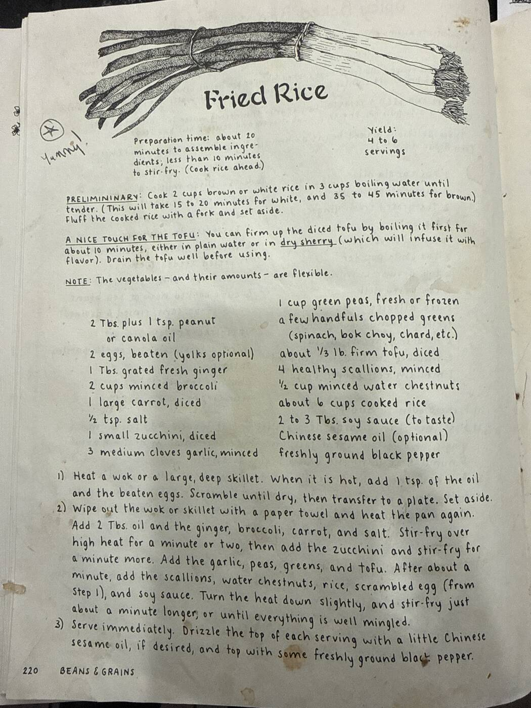

Fried Rice

A forgiving, pantry-clean-out fried rice: scrambled egg, tofu, and a big mix of vegetables (the card insists the veggies and their amounts are flexible) tossed with day-old rice, scallions, water chestnuts, and soy sauce. Cook the rice ahead of time so it's cold and separate before it hits the wok.
4–6servings
~20 minprep
<10 minstir-fry
Vegetariandiet
Ingredients
- 2 tbsp plus 1 tsp peanut or canola oil
- 2 eggs, beaten (yolks optional)
- 1 tbsp grated fresh ginger
- 2 cups minced broccoli
- 1 large carrot, diced
- ½ tsp salt
- 1 small zucchini, diced
- 3 medium cloves garlic, minced
- 1 cup green peas, fresh or frozen
- a few handfuls chopped greens (spinach, bok choy, chard, etc.)
- about ⅓ lb firm tofu, diced
- 4 healthy scallions, minced
- ½ cup minced water chestnuts
- about 6 cups cooked rice (brown or white)
- 2 to 3 tbsp soy sauce, to taste
- Chinese sesame oil (optional)
- freshly ground black pepper
Method
- Cook the rice ahead. Cook 2 cups brown or white rice in 3 cups boiling water until tender — 15–20 minutes for white, 35–45 minutes for brown. Fluff with a fork and set aside.
- Optional: firm up the tofu. Boil the diced tofu for about 10 minutes in plain water or dry sherry (the sherry infuses it with flavor). Drain well before using.
- Scramble the egg. Heat a wok or large, deep skillet. When hot, add 1 tsp of the oil and the beaten eggs. Scramble until dry, then transfer to a plate and set aside.
- Stir-fry the vegetables. Wipe out the wok with a paper towel and heat again. Add the remaining 2 tbsp oil, the ginger, broccoli, carrot, and salt. Stir-fry over high heat for a minute or two, then add the zucchini and stir-fry a minute more. Add the garlic, peas, greens, and tofu. After about a minute, add the scallions, water chestnuts, rice, scrambled egg, and soy sauce. Turn the heat down slightly and stir-fry about a minute longer, until everything is well mingled.
- Serve. Serve immediately. Drizzle the top of each serving with a little Chinese sesame oil, if desired, and top with freshly ground black pepper.
Note from the card: the vegetables — and their amounts — are flexible.
Marked on the card with a circled star and "yummy!" in the margin.